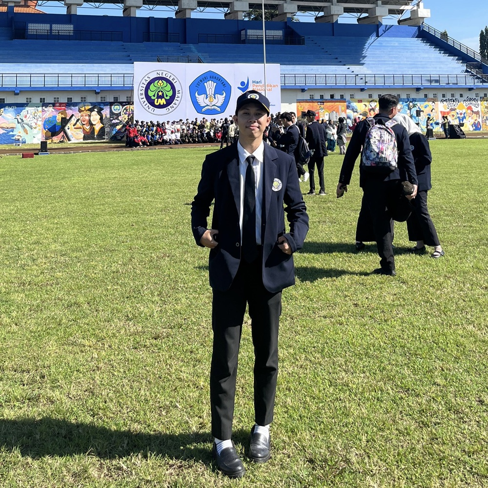

E-Portofolio ini berisi dokumentasi perjalanan akademik, refleksi pembelajaran, pengembangan kompetensi, serta artefak perangkat pembelajaran selama mengikuti Program Pendidikan Profesi Guru (PPG) Calon Guru.

Mahasiswa PPG Calon Guru 2026